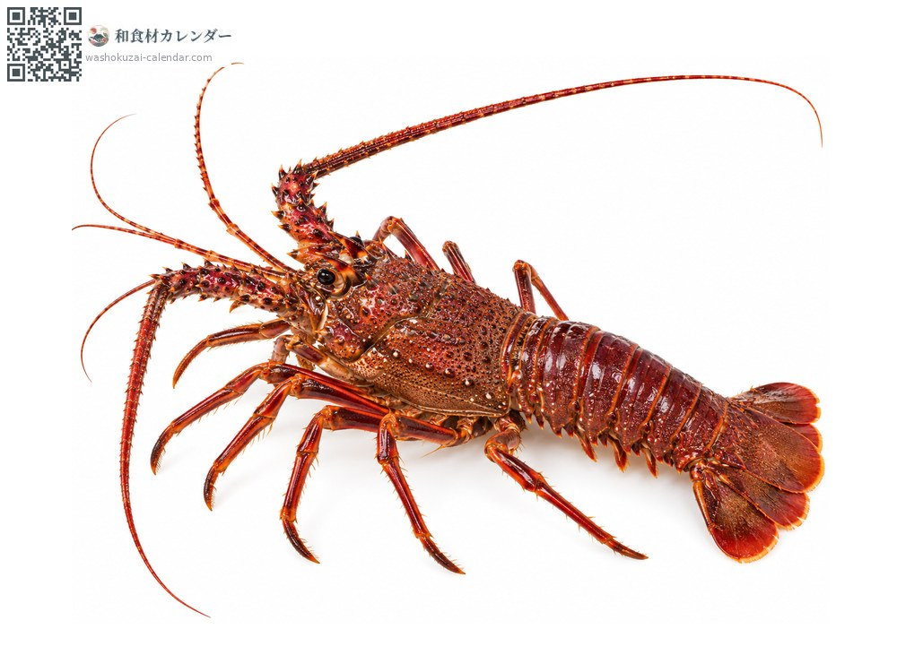
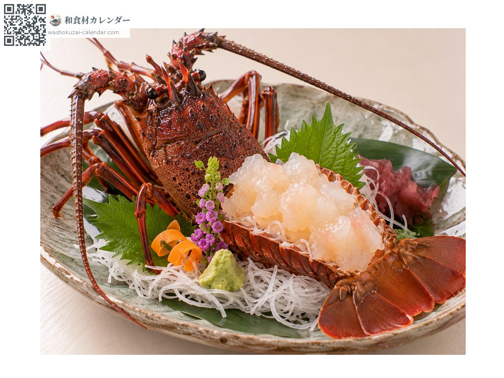
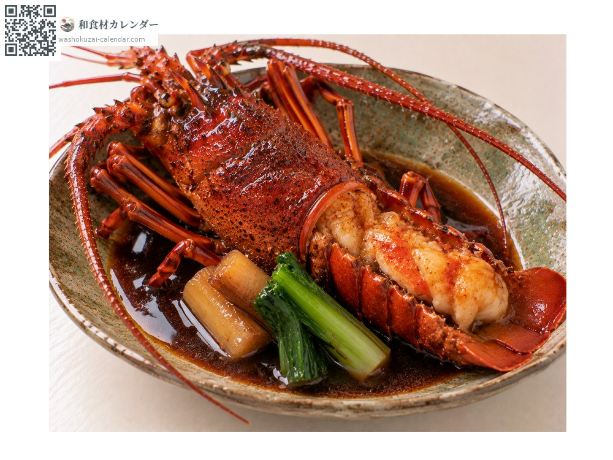
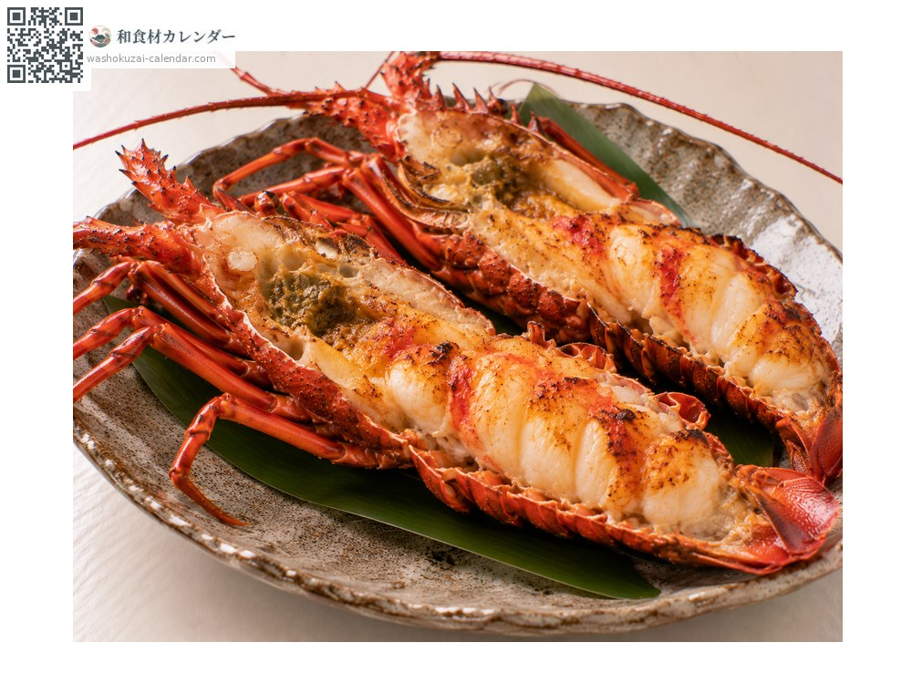
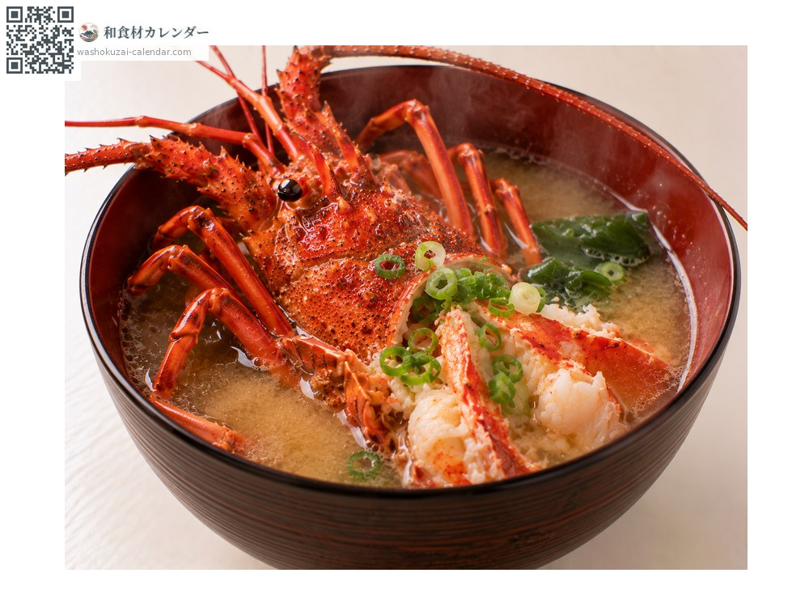

Seafood
Japanese spiny lobster
伊勢海老 いせえび
At its best in Jan, Feb, Nov, Dec

When it is at its best
Jan
Feb
Mar
Apr
May
Jun
Jul
Aug
Sep
Oct
Nov
Dec
In seasonAvailable
How to cook

Sashimi
Prepared live and eaten raw, for a crisp bite and strong sweetness.

Gusoku-ni
Simmered in sweet soy in the shell, which gives depth to the broth.

Onigara-yaki
Halved and grilled in the shell, where the tomalley comes through.

Miso soup
The head gives a rich broth.
How to choose
Lively, with unbroken antennae. A glossy shell, heavy in the hand.
Storage
Keep alive and refrigerated, packed in sawdust or newspaper. Once prepared, use the same day.
Main areas
Good to know
Long antennae and a red shell suggest armour and a long life, which is why it appears at celebrations. Its name comes from the Ise region, where it was once caught in quantity. It grows by moulting, and large ones may be over ten years old.
At their best around the same time
 Chub mackerel
Chub mackerel Japanese amberjack
Japanese amberjack Pacific bluefin tuna
Pacific bluefin tuna Swordfish and marlin
Swordfish and marlin Yellowback seabream
Yellowback seabream Golden threadfin bream
Golden threadfin bream Spottedtail morwong
Spottedtail morwong Largescale blackfish
Largescale blackfish